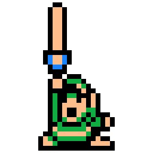

Link est un personnage imaginaire et le principal héros de la série de jeux vidéo The Legend of Zelda de Nintendo. Créé par Shigeru Miyamoto, The Legend of Zelda est un des noyaux durs de Nintendo. En 2007, plus de 47 millions d’exemplaires ont été vendus à travers le monde1. La popularité persistante de la série a conduit à de nombreuses incarnations de l’histoire de Zelda et de Link lui-même, sa première apparition étant dans le jeu The Legend of Zelda. Le personnage a été représenté dans d’autres jeux vidéo de Nintendo, mais également dans d’autres produits commerciaux dérivés comme des mangas ou encore dans un programme d’animation à la télévision. Link a été récompensé d’une étoile lors du Walk of Game en 2005, aux côtés de Mario et de Sonic le hérisson2.
Link est dépeint comme un garçon hylien du pays imaginaire nommé Hyrule. à l’origine jeune épéiste, son identité, apparence et rôle change d’un jeu à l’autre. Son âge varie suivant chaque jeu, se situant généralement entre dix et vingt ans. Toutefois, certaines choses restent immuables : son équipement de base est toujours identique d'un jeu à l'autre (excepté dans Breath of the Wild), équipement constitué d’une tunique et d’un bonnet vert, d’une paire de bottes, d’une épée et d’un bouclier.
Par la suite, Link acquiert au cours du jeu un arsenal important et hétéroclite : grappin, boomerang, bombes, arc avec plusieurs types de flèches, ocarina, masques, tuniques, bottes, masse, épées plus puissantes (dont Excalibur ou l’épée de Légende, aussi connue sous son nom anglais Master Sword), parfois un fouet, un virevent, etc.
| Personnage de Link - Année | Nom du jeu | Console(s) de jeux |
|---|---|---|
 |
The Legend of Zelda | Famicom Disk System |
| 1986 | ||
|  | Link's Awakening | Gameboy puis Nintendo 3DS |
| 1993 | ||
 |
Ocarina Of Time | Game Cube puis Wii puis Nintendo 3DS |
| 1998 | ||
| Majora's Mask | Nintendo 64 puis Wii et Nintendo 64 | |
| 2000 | ||
| Oracle of Seasons | Game Boy puis Nintendo 3DS | |
| 2001 | ||
| Twilight Princess | Wii, Wii U, Nintendo Game Cube | |
| 2006 | ||
 |
Hyrule Warriors | Wii U, Nintendo 3DS |
| 2014 | ||
| Triforce Heroes | Nintendo 3DS | |
| 2015 | ||
 |
Breath of the Wild | Wii U, Nintendo NX |
| 2017 |
WIKIPEDIA. Link (The Legend of Zelda)
https://fr.wikipedia.org/wiki/Link_(The_Legend_of_Zelda)